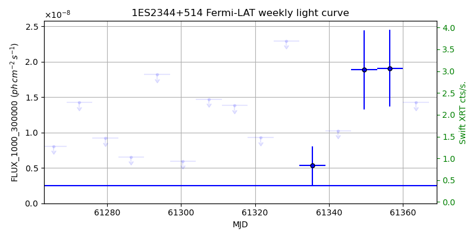

LAT Lightcurve site: https://fermi.gsfc.nasa.gov/ssc/data/access/lat/msl_lc/source/1ES_2344p514
Swift site: https://www.swift.psu.edu/monitoring/source.php?source=1ES2344+514
NED: Query
Time of last update of this page: UT: 2026-11-28 16:31 (MJD: 61372.688)
| Property | Value |
|---|---|
| R.A. | 23:47:04.80 |
| Dec. | 51:42:18.0 |
| z | 0.044 |
| 3FGL SpectrumType | PowerLaw |
| 3FGL PL Index | 1.78 |
| 3FGL Flux_100_300000 | 1.51e-08 1 / (s cm2) |
| 3FGL Flux_1000_300000 | 2.46e-09 1 / (s cm2) |
| 3FGL Flux >200 GeV | 3.83e-11 1 / (s cm2) |
| 3FGL Extrap. Crab >200 GeV | 0.16 |
| 3FGL Flux After EBL Absorption >200GeV | 2.94e-11 1 / (s cm2) |
| 3FGL EBL Crab Fraction >200GeV | 0.12 |
| MJD | dMJD | Flux | dFlux | Frac3FGL | FracCrab>200GeV | EBLFracCrab>200GeV |
|---|---|---|---|---|---|---|
| 61367.50 | 0.50 | 7.15e-08 | 0.00e+00 | 0.00 | 0.00 | 0.00 |
| 61368.50 | 0.50 | 8.43e-08 | 0.00e+00 | 0.00 | 0.00 | 0.00 |
| 61369.50 | 0.50 | 8.00e-08 | 0.00e+00 | 0.00 | 0.00 | 0.00 |
| 61370.50 | 0.50 | 1.27e-07 | 0.00e+00 | 0.00 | 0.00 | 0.00 |
| 61371.50 | 0.50 | 1.53e-07 | 0.00e+00 | 0.00 | 0.00 | 0.00 |

| MJD | dMJD | Flux | dFlux | Frac3FGL | FracCrab>200GeV | EBLFracCrab>200GeV |
|---|---|---|---|---|---|---|
| 61335.50 | 3.50 | 3.42e-08 | 2.17e-08 | 2.27 | 0.37 | 0.28 |
| 61342.50 | 3.50 | 8.95e-08 | 0.00e+00 | 0.00 | 0.00 | 0.00 |
| 61349.50 | 3.50 | 8.32e-08 | 2.80e-08 | 5.52 | 0.91 | 0.70 |
| 61356.50 | 3.50 | 7.15e-08 | 2.45e-08 | 4.75 | 0.78 | 0.60 |
| 61363.50 | 3.50 | 4.66e-08 | 2.25e-08 | 3.09 | 0.51 | 0.39 |

| MJD | dMJD | Flux | dFlux | Frac3FGL | FracCrab>200GeV | EBLFracCrab>200GeV |
|---|---|---|---|---|---|---|
| 61367.50 | 0.50 | 2.88e-08 | 0.00e+00 | 0.00 | 0.00 | 0.00 |
| 61368.50 | 0.50 | 1.18e-08 | 0.00e+00 | 0.00 | 0.00 | 0.00 |
| 61369.50 | 0.50 | 3.44e-08 | 0.00e+00 | 0.00 | 0.00 | 0.00 |
| 61370.50 | 0.50 | 3.13e-08 | 0.00e+00 | 0.00 | 0.00 | 0.00 |
| 61371.50 | 0.50 | 4.36e-08 | 0.00e+00 | 0.00 | 0.00 | 0.00 |

| MJD | dMJD | Flux | dFlux | Frac3FGL | FracCrab>200GeV | EBLFracCrab>200GeV |
|---|---|---|---|---|---|---|
| 61335.50 | 3.50 | 5.32e-09 | 2.71e-09 | 2.16 | 0.36 | 0.28 |
| 61342.50 | 3.50 | 1.03e-08 | 0.00e+00 | 0.00 | 0.00 | 0.00 |
| 61349.50 | 3.50 | 1.89e-08 | 5.59e-09 | 7.67 | 1.26 | 0.97 |
| 61356.50 | 3.50 | 1.91e-08 | 5.43e-09 | 7.76 | 1.28 | 0.98 |
| 61363.50 | 3.50 | 1.42e-08 | 0.00e+00 | 0.00 | 0.00 | 0.00 |
--------------------------------------------------------- Using user-supplied coords: 23:47:04.80 51:42:18.0 2000 --------------------------------------------------------- FLWO UT night of: 2026-11-29 Local Sid. @ Midnight: 04:08 Sunset (-15.0) (local, UT): 18:31 01:31 Sunrise (-15.0) (local, UT): 05:53 12:53 Moonrise (local, UT): 21:57 04:57 Moonset (local, UT): Moon phase: 0.72 --------------------------------------------------------- AzTime LSID UT Obj_el Obj_az Mn_el Mn_az Sep. --------------------------------------------------------- 18:31 22:39 01:31 66.2 27.0 -32.9 32.1 99.2 19:01 23:09 02:01 68.6 16.7 -29.4 38.9 99.4 19:31 23:39 02:31 69.8 4.0 -25.4 45.0 99.6 20:01 00:09 03:01 69.5 350.7 -21.0 50.6 99.9 20:31 00:39 03:31 67.8 338.8 -16.2 55.6 100.1 21:01 01:09 04:01 64.9 329.6 -11.1 60.2 100.3 21:31 01:39 04:31 61.4 323.0 -5.4 64.5 100.5 22:01 02:09 05:01 57.3 318.6 0.4 68.5 100.7 22:31 02:39 05:31 53.0 315.8 5.8 72.2 100.9 23:01 03:10 06:01 48.4 314.2 11.6 75.8 101.1 23:31 03:40 06:31 43.8 313.5 17.5 79.4 101.2 00:01 04:10 07:01 39.2 313.6 23.6 82.9 101.4 00:31 04:40 07:31 34.6 314.2 29.7 86.5 101.6 01:01 05:10 08:01 30.0 315.3 35.8 90.3 101.8 01:31 05:40 08:31 25.6 316.8 42.0 94.4 101.9 02:01 06:10 09:01 21.3 318.7 48.1 99.1 102.1 02:31 06:40 09:31 17.2 321.0 54.2 104.7 102.2 03:01 07:10 10:01 13.3 323.6 60.1 111.7 102.4 03:31 07:40 10:31 9.6 326.5 65.6 121.1 102.6 04:01 08:10 11:01 6.3 329.7 70.5 134.7 102.7 04:31 08:40 11:31 3.3 333.2 74.0 154.7 102.9 05:01 09:11 12:01 0.8 336.9 75.2 181.1 103.1 05:31 09:41 12:31 -1.1 341.0 73.6 206.8 103.2 05:53 10:02 12:53 -2.0 344.0 71.0 221.2 103.4 --------------------------------------------------------- Dark hours >55 deg.: 3.43 srcstart (UT): 2026-11-29 01:31 srcend (UT): 2026-11-29 04:57